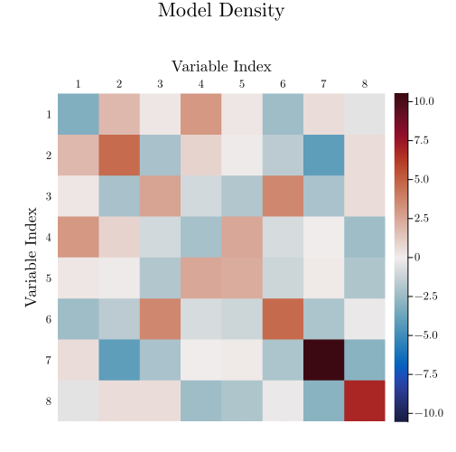
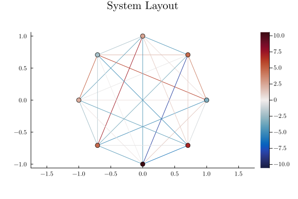
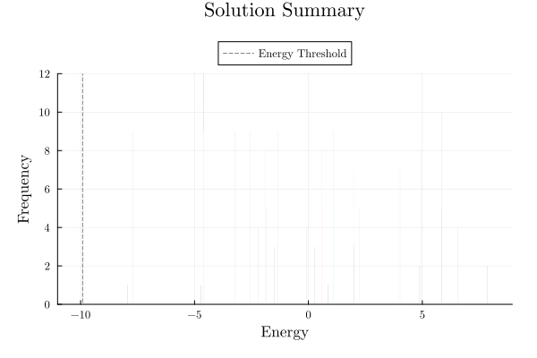
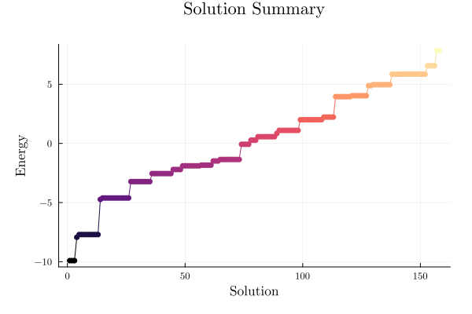

Analysis
Models
using QUBOTools
n = 8
# Generates a Sherrington-Kirpatrick model
model = QUBOTools.generate(QUBOTools.SK(n))QUBOTools Model
▷ Sense ………………… Min
▷ Domain ……………… BoolDomain
▷ Variables ……… 8
Density:
▷ Linear ……………… 100.00%
▷ Quadratic ……… 100.00%
▷ Total ………………… 100.00%
There are no warm-start values.
There are no solutions available.
Model Density
render_visualization(QUBOTools.ModelDensityPlot(model))
System Layout
render_visualization(QUBOTools.SystemLayoutPlot(model))
Solutions
solution = magical_solution_method(model)SampleSet{Float64, Int64} with 30 samples:
Sample{Float64, Int64}([0, 1, 1, 1, 1, 0, 1, 1], -9.911146163609365, 3)
Sample{Float64, Int64}([1, 0, 0, 0, 1, 1, 0, 1], -7.935866956098144, 1)
Sample{Float64, Int64}([1, 0, 0, 1, 0, 1, 0, 0], -7.706813487839632, 9)
Sample{Float64, Int64}([1, 0, 0, 1, 0, 0, 0, 1], -4.733655701706034, 1)
Sample{Float64, Int64}([1, 0, 1, 1, 0, 0, 0, 0], -4.614044366882828, 9)
Sample{Float64, Int64}([0, 1, 0, 0, 1, 1, 1, 1], -4.614044366882824, 3)
Sample{Float64, Int64}([0, 0, 0, 1, 1, 1, 0, 1], -3.227789038694164, 9)
Sample{Float64, Int64}([1, 1, 1, 0, 0, 0, 0, 0], -2.549138683910151, 9)
Sample{Float64, Int64}([1, 0, 0, 0, 0, 1, 1, 0], -2.2058416368323703, 4)
⋮
Energy Frequency
λ = minimum(QUBOTools.value, solution) # threshold
render_visualization(QUBOTools.EnergyFrequencyPlot(solution, λ))
Energy Distribution
render_visualization(QUBOTools.EnergyDistributionPlot(solution))
Time-to-Target and Trial Semantics
Time-to-target (TTT) estimates require the probability unit and the time unit to match, and must distinguish a known IID trial probability from an empirical successes / trials estimate over a finite sample count.
Independent Reads vs. Independent Runs
When a sampler records the duration of a batch of $R$ independent reads (such as RandomSampler), declare trial_unit = :read so each read receives $t_{\text{trial}} = t_{\text{batch}} / R$:
read_batch = SampleSet(
[
Sample([0, 0, 1], 1.0, 1),
Sample([0, 1, 0], 2.0, 2),
Sample([0, 1, 1], 3.0, 3),
Sample([1, 0, 0], 4.0, 4),
];
metadata = Dict{String,Any}(
"time" => Dict{String,Any}("effective" => 1.0, "total" => 2.0),
),
sense = :min,
domain = :bool,
)
read_est = QUBOTools.time_to_target_estimate(read_batch, 1.0; trial_unit = :read)
(
trial_unit = read_est.trial_unit,
trials = read_est.trials,
successes = read_est.successes,
trial_time = read_est.trial_time,
operational_ttt = read_est.operational_ttt,
continuous_ttt = read_est.continuous_ttt,
)(trial_unit = :read, trials = 10, successes = 1, trial_time = 0.1, operational_ttt = 4.4, continuous_ttt = 4.370869065356565)When a SampleSet represents a single solver run (or a trajectory/selected batch), declare trial_unit = :run (or pass a vector of independent run SampleSets):
run_est = QUBOTools.time_to_target_estimate(read_batch, 1.0; trial_unit = :run)
(
trial_unit = run_est.trial_unit,
trials = run_est.trials,
successes = run_est.successes,
trial_time = run_est.trial_time,
status = run_est.status,
)(trial_unit = :run, trials = 1, successes = 1, trial_time = 1.0, status = :empirical_all_succeeded)Cost Boundaries and Endpoint Semantics
- Named cost boundaries: Select
cost_boundary = :effective(backendmetadata["time"]["effective"]),cost_boundary = :total(solver wall timemetadata["time"]["total"]), orcost_boundary = :complete(caller-supplied complete trial/batch cost ormetadata["time"]["complete"]). Boundaries are never silently substituted for one another. - Known vs. empirical endpoints:
- For a known trial probability $p = 1$ and $0 < s < 1$, one trial is still required (
operational_ttt == trial_time,status == :known_unit_probability); known $p = 0$ is unattainable (Inf,status == :known_zero_probability). - Empirical all-success (
N/N) and all-failure (0/N) batches retain their finitetrials = Nandsuccessescounts withstatus == :empirical_all_succeededor:empirical_zero_successesrather than claiming certified certainty or impossibility.
- For a known trial probability $p = 1$ and $0 < s < 1$, one trial is still required (
- Non-IID sample regimes and migration: Solutions tagged with
"sampling_regime"(or"trial_semantics"/"sample_selection") in("correlated", "selected", "repaired", "best_only", "postselected", "top_k")rejecttrial_unit = :read. Legacy callstime_to_target(sol, λ, s)withouttrial_unitemit a deprecation warning; migrate by passingtrial_unit = :readortrial_unit = :run(or callingQUBOTools.time_to_target_estimate).
Consolidated JSON Run Reports
QUBOTools.report and QUBOTools.write_report aggregate model statistics, solution metrics, objective breakdowns, sample table metadata, and optional reformulation/penalty/feasibility metadata into a single RFC 8259 JSON document (format = "QUBOTools.report", version = 1).
Output Schema (QUBOTools.report v1)
| Top-level key | Type | Contents |
|---|---|---|
"format" | String | "QUBOTools.report" |
"version" | Int | 1 |
"package_versions" | Object | "QUBOTools" and "Julia" version strings |
"model" | Object | "dimension", "variables", "sense", "domain", "scale", "offset", "linear_size", "quadratic_size", "term_count", "density" ("total", "linear", "quadratic"), "coefficients" ("linear", "quadratic", "all" with "count", "min", "max", "min_abs", "max_abs", "mean", "mean_abs", "std", "dynamic_range"), and "metadata" |
"solution" | Object | "present", "sample_count", "total_reads", "sense", "domain", "metadata", "samples_metadata" (QUBOTools.samples header dict, or null when solution = nothing), "timing" ("effective_time", "total_time"), "energies" ("best", "min", "max", "mean", or null when empty), "best_sample" (with "objective_breakdown", or null when empty), "objective_values_verified", "objective_mismatch_count", "metrics" (see status table below), and "samples" (array of row dicts when include_samples = true, or null when include_samples = false) |
"penalties" | Object or null | Penalty dictionary passed via penalties, extracted from reformulation["applied_penalties"], or found in metadata(model)["penalties"] |
"reformulation" | Object or null | Reformulation metadata dictionary passed via reformulation or found in metadata(model)["toqubo"]["reformulation"] |
"feasibility" | Object or null | Optional feasibility report dictionary or struct passed via feasibility |
solution.metrics Statuses and Conditional Fields
solution["metrics"] always includes "target_threshold", "target_probability", "trial_unit", "cost_boundary", "success_rate", "ttt", "time_to_target", and "status". Depending on available inputs and metadata, "status" and additional conditional fields take the following values:
"status" | Condition | Conditional Fields & ttt Behavior |
|---|---|---|
"empty_solution" | No samples attached (isempty(sol) or solution = nothing) | "success_rate", "ttt", and "time_to_target" are null |
"threshold_not_provided" | Samples present, λ = nothing | "success_rate", "ttt", and "time_to_target" are null |
"trial_unit_required" | Samples and λ present, but neither trial_unit nor metadata["trial_unit"] is declared | Includes "read_success_rate" (when IID-compatible) and "run_success_rate"; "success_rate", "ttt", and "time_to_target" are null |
"missing_timing_metadata" | Samples, λ, and trial_unit present, but no timing is available for cost_boundary = :effective | Includes "trials", "successes", and "success_rate"; "ttt" and "time_to_target" are null |
"empirical_interior_probability", "empirical_all_succeeded", "empirical_zero_successes" | Samples, λ, trial_unit, and timing available | Includes "trials", "successes", "success_rate", and "time_to_target" (TimeToTargetEstimate dict); when zero trials succeeded ("empirical_zero_successes"), "ttt" and infinite repetition fields serialize as null |
QUBOTools.attach!(model, solution)
rep = QUBOTools.report(
model;
λ = λ,
trial_unit = :read,
penalties = Dict("constraint_1" => 10.0),
)
(
format = rep["format"],
dimension = rep["model"]["dimension"],
sample_count = rep["solution"]["sample_count"],
verified = rep["solution"]["objective_values_verified"],
success_rate = rep["solution"]["metrics"]["success_rate"],
penalties = rep["penalties"],
)(format = "QUBOTools.report", dimension = 8, sample_count = 30, verified = true, success_rate = 0.0189873417721519, penalties = Dict{String, Any}("constraint_1" => 10.0))